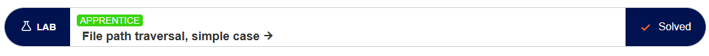
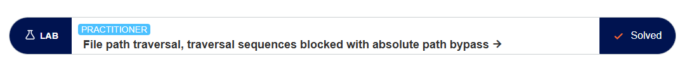
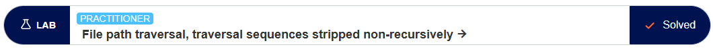

ROAD TO HALL OF FAME
Ruta de progreso de laboratorios de Ciberseguridad.
File Path Traversal: Simple Case

Descripción:El objetivo de este laboratorio es explotar una vulnerabilidad de Path Traversal en la funcionalidad de visualización de imágenes de productos de la aplicación web, con el fin de leer y recuperar el contenido del archivo /etc/passwd del servidor.
📥 Descargar PDFFile path traversal, traversal sequences blocked with absolute path bypass

Descripción:El objetivo de este laboratorio es explotar una vulnerabilidad de path traversal en la visualización de imágenes de productos donde, a pesar de bloquear secuencias de escape comunes, la aplicación interpreta el archivo proporcionado en relación con un directorio de trabajo predeterminado; para resolverlo, debes evadir esta restricción lógica y lograr extraer con éxito el contenido del archivo crítico del sistema operativo, /etc/passwd.
📥 Descargar PDFFILE PATH TRAVERSAL, TRAVERSAL SEQUENCES STRIPPED NON-RECURSIVELY

Descripción:El objetivo de este laboratorio es explotar una vulnerabilidad de path traversal en la visualización de imágenes de productos donde la aplicación implementa un filtro débil que elimina las secuencias de escape de directorios de manera no recursiva; para resolverlo, se debe aplicar una técnica de anidación que evada el mecanismo de defensa y permita extraer con éxito el contenido del archivo crítico del sistema operativo, /etc/passwd.
📥 Descargar PDFLAB: FILE PATH TRAVERSAL TRAVERSAL SEQUENCES STRIPPED NON-RECURSIVELY
La descripción y evidencia técnica se añadirán una vez completado el laboratorio.
LAB: FILE PATH TRAVERSAL TRAVERSAL SEQUENCES STRIPPED WITH SUPERFLUOUS URL-DECODE
La descripción y evidencia técnica se añadirán una vez completado el laboratorio.
LAB: FILE PATH TRAVERSAL VALIDATION OF START OF PATH
La descripción y evidencia técnica se añadirán una vez completado el laboratorio.
LAB: FILE PATH TRAVERSAL VALIDATION OF FILE EXTENSION WITH NULL BYTE BYPASS
La descripción y evidencia técnica se añadirán una vez completado el laboratorio.